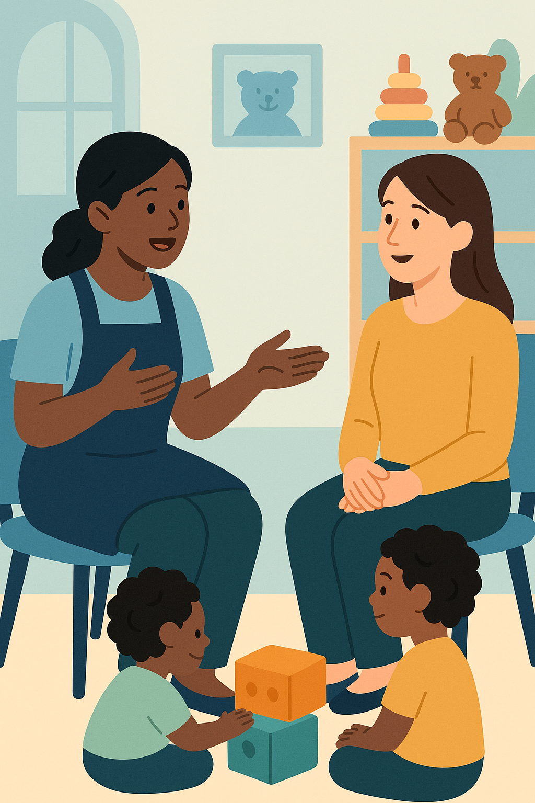

Unit 3: Session 2 – Listening Introduction
Overview
In Session 2 of Unit 3, you’ll engage with a listening activity, To Show You the Ropes, featuring a workplace conversation at Tip Top Trading. Denise, starting a new role in the Sales team, is guided by Anna, though onboarding faces challenges. Paired with a Listening Strategy, this session helps you understand workplace dynamics, learn practical expressions, and improve listening skills for professional settings.
Listening Activity: To Show You the Ropes
This activity immerses you in a real-life scenario where Anna helps Denise navigate her new role, with some misunderstandings along the way. You’ll practice understanding spoken English and learn how to support new colleagues.
You will:
- Listen to a workplace conversation about onboarding.
- Learn expressions for explaining tasks and guiding colleagues.
- Understand team support dynamics in a professional setting.
Key Questions:
- What support does Denise receive on her first day?
- What expressions does Anna use to guide her?
- How do other colleagues react?
Listening Strategy: Focus on Main Idea and Key Details
This strategy helps you follow workplace conversations by prioritizing the main idea and key details, boosting confidence in understanding native speakers.
Why use it? It helps you grasp the situation (main idea) and specific actions or reactions (key details) without needing every word.
How to apply it:
- Before listening:
- Reflect on first-day challenges in a job.
- Review task questions to know what to listen for.
- Guess the meaning of “showing someone the ropes.”
- First listen:
- Identify the general situation: Who’s involved? What’s happening?
- Focus on the main idea of the scene.
- Second listen:
- Note details: What task does Anna show? How does Denise react? What do colleagues say?
- Write down useful phrases Anna uses.
- After listening:
- Check answers and reflect: Was the conversation clear? Could you follow it in real life?
Benefits:
- Improves comprehension of workplace conversations.
- Helps prioritize essential information.
- Builds confidence with native speakers at normal speed.